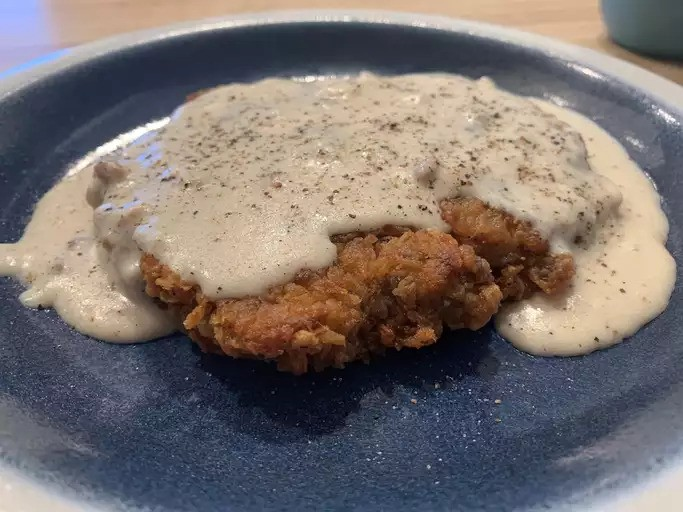

Chicken Fried Steak

Ingredients
- Beef Cube Steaks - 4x1/2 Lb
- All-Purpose Flour - 2 1/4 Cups
- Baking Powder - 2 Tsp
- Baking Soda - 1 Tsp
- Black Pepper - 1 Tsp
- Salt - 3/4 Tsp
- Buttermilk - 1 1/2 Cups
- Tabasco - 1 Tbsp
- Egg - 1 Qty
- Minced Garlic Cloves - 2 Qty
- Vegetable Shortening - 3 Cups
- Milk - 4 Cups
- Salt and Pepper - To Taste
Directions
- Place steaks between 2 layers of plastic and pound to a thickness of 1/4 inch.
- Place 2 cups flour in a shallow bowl.
- Stir together baking powder, baking soda 1 teaspoon pepper, and 3/4 teaspoon salt in second shallow bowl. Add buttermilk, Tabasco sauce, egg, and garlic; stir to combine.
- Heat shortening in a deep cast-iron skillet to 325 degrees F (165 degrees C). Place a wire rack over a sheet of parchment paper.
- While the shortening is heating, dredge a steak in flour to coat; shake off excess. Dip into buttermilk batter; lift up so excess batter drips back into the bowl. Press in flour again to coat both sides completely. Place breaded steak on the wire rack and repeat to bread remaining steaks.
- Fry steaks, in batches if necessary, until evenly golden brown, 3 to 5 minutes per side. Remove steaks to a paper towel-lined plate to drain. Cover with foil to keep warm while you make the gravy.
- Drain fat from the skillet, reserving 1/4 cup of the liquid and as much of the solid remnants as possible.
- Return the skillet to medium-low heat; add the reserved oil. Whisk the remaining 1/4 cup flour into the oil. Scrape the bottom of the pan with a spatula to release solids into the gravy.
- Stir in milk, increase the heat to medium, and bring the gravy to a simmer. Cook, stirring often, until thick, 6 to 7 minutes. Season with kosher salt and pepper.
- Transfer steaks to a platter and pour gravy over top.